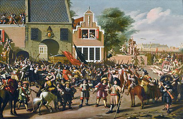
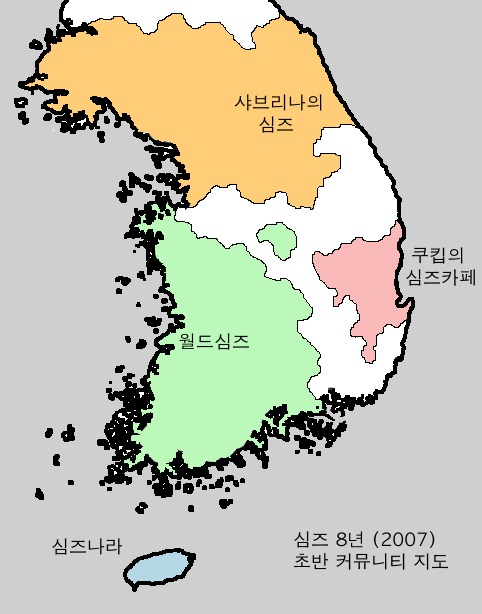

비슷한 시기에 쿠킵의 심즈카페에서는 몇몇 떠오르는 신인들이 쿠킵님의 만화에서 영감을 받아 다양한 고품질의 심즈만화들을 제작해 올리며 큰 인기를 누렸다. 이들은 서로간에 끈끈한 관계를 형성하며, 쿠킵의 심즈카페에서 그동안 거의 볼 수 없었던 활발한 친목 분위기를 형성하였다.
활발하고 사이좋은 분위기가 생각보다 카페의 질서를 어지럽히지 않으면서 잘 유지되자, 쿠킵님은 이런 모습이 보기 좋았는지 얼마 뒤 가입연령 제한 정책을 해지시켰다.
2006년 말이 되자 월드심즈의 유일 스탭의 카페 관리가 조금씩 뜸해지면서 월드심즈는 다시금 질서를 잃고 있었다. 그러자 이 때를 틈 타 몇몇 비매너 회원들은 다시금 욕설과 비방을 남발하며 카페 내에 혼란을 조성했는데, 그 중 가장 대표적이었던 인물이 바로 스탭의 닉네임을 사칭한 한 익명의 회원이었다.
이 회원은 처음부터 카페에서 활개를 치며 회원들에게 거친 말이나 욕설을 퍼부었다. 월드심즈의 회원들은 순간 달라진(?) 스탭님의 성격을 보고 경악했지만, 이내 아이디와 등급이 다른 것을 확인하고 이 정체불명의 회원을 짝퉁이라 일컫기 시작했다.
(이미지 출처: Wikipedia: https://en.wikipedia.org/wiki/Lynching)
(자료설명: 월드심즈의 광장 한복판에서 폭동을 일으키는 익명의 회원들.)
문제는 당시 스탭 분이 너무 바빠서 이 짝퉁 회원을 처단할 시간을 못 내고 있었다는 것이다. 그러자 짝퉁 회원은 몇 개의 서로 다른 아이디들을 동시에 동원해서 여러 명 행세를 하며 묘하게 물타기를 하는 등의 짓을 서슴치 않았고, 나중에 이 모습을 본 스탭은 비통함에 차 스스로 스탭직을 포기한 채 자진 탈퇴까지 하는 것을 고려하기 시작했다.
스탭 분의 이같은 결심을 들은 회원들은 "그래도 스탭역할은 계속 해달라"고 부탁했다. 왜냐하면 당시 그 분이 유일하게 월드심즈를 이끌어 가던 실세였기 때문이다. 그러나 다른 건 몰라도 일상이 너무 바빠서 시간투자 자체를 못 하는 건 어쩔 수 없었다.
그러자 일각에서는 추가로 스탭을 더 임명해야 한다고 주장하기 시작했고, 이 의견을 수용한 월드심즈의 매니저는 결국 이듬해인 2007년 2월에 4명의 스탭들을 새로 임명하게 된다.
이렇게 형성된 4명의 운영진은 이후 2007년 중반까지 월드심즈를 다스리는 주요 세력으로서 집권하게 되었다.
한편 쿠킵님은 2006년 말부터 슬슬 쿠킵의 심즈카페를 관리하는 게 뜸해지기 시작했는데, 이 탓에 카페의 운영이 예전만큼 안 되기 시작했다. 쿠킵님도 이를 알았는지 2006년 11월에는 스탭을 한 명 채용하고, 2007년 3월과 5월에는 각각 스탭을 한 명씩 더 채용하며 부족한 일손을 채워 나갔다.
(심즈 8년(2007) 초반 커뮤니티 지도)